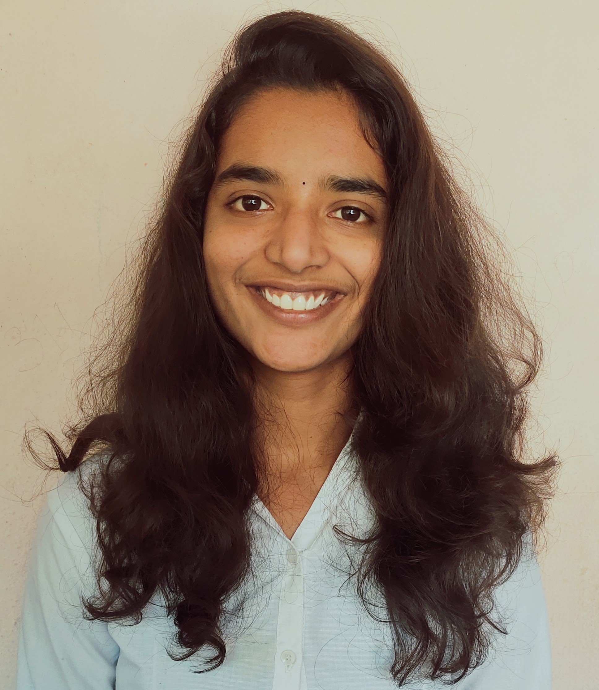

Gunthakanti Aishwarya ReddyStudent at JNTUA college of Engineering || Web Development POD lead @ Devos Community || Campus Ambassdor @ Aasya Foundation |
|---|
Welcome to my digital portfolio.I was born in Kurnool and completed my matriculation at Ridge School Kurnool. I eventually finished my +2 education at Sri Chaitanya Junior College in Hyderabad. This website clearly depicts my journey over the past few months and brings closure to all of my work
When I was in my 2nd year Btech in JNTUA college of Engineering I realised how much I had left to learn.That made me to decide the domain that I'm interested in.The traditional style of Education didn't give me any ripen fruit that made me think out of bounds.I decided to choose the domain that I am interested in and that resulted in Web Development.When I was in my 3rd year I passionate about Computer Networks that encouraged myself to opt Ethical Hacking as my second domain.
Visualization effect that we get while doing something is the first reason for choosing this domain.It was all started with HTML and CSS soon I have learned Javascript.Going into depth as a web developer made me more focused and creative.I did 2 major like Women Empowerment Webiste and Ecommerce Webiste in elation.This gave me confidence to try for the Nanodegree program in Web Design organized by Udacity.I have even completed my first Web Design internship in InternshipStudio and now I am working as Intern at Oasis Infobyte.I have Even started working on React.
My Passion towards Computer Networks made me opt Ethical Hacking.This is still in progress.I'm doing NPTEL course related to this.Even I have completed Udemy Certification course on Google Cloud before starting this Ethical Hacking.